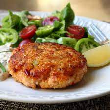

Salmon Cakes
Easy healthy recipe for when you dont have a lot of time

Ingredients
- 1 (14.75 oz) can salmon, drained and flaked
- 2 eggs, beaten
- 1 small onion, diced
- 1 teaspoon ground black pepper
- 3 tablespoons vegetable oil
Steps
- Pick through the salmon and remove any bones. In a mixing bowl, beat the eggs and add the diced onion, salmon and pepper. Mix thoroughly.
- Shape into 2 ounce patties; about 7 or 8 patties. In a large skillet over medium heat, heat the oil. Fry each patty for 5 minutes on each
side or until crispy and golden brown.